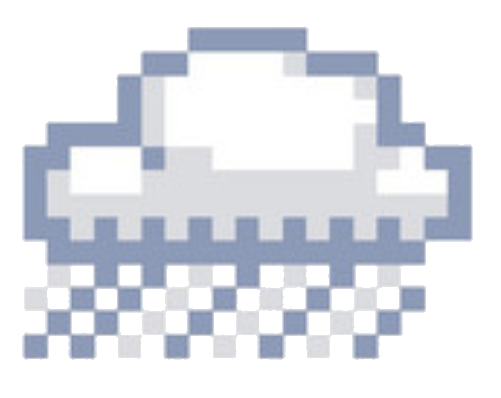
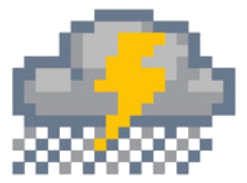

<link rel="stylesheet" href="https://fonts.googleapis.com/css?family=Pixelar">
<section class="bg">
  <div class="card-container">
    <div class="card pixel-font">
      <div class="text-container">
        <div class="location">{{jsonReaderService.weatherJSON.properties.relativeLocation.properties.city}}
        , {{jsonReaderService.weatherJSON.properties.relativeLocation.properties.state}}</div>
        <span *ngIf="inF" class="temperature">
          {{jsonReaderService.hourlyJSON.properties.periods[0].temperature}} °F
        </span>
        <span *ngIf="inC" class="temperature">
          {{jsonReaderService.hourlyJSON.properties.periods[0].temperature}} °C
        </span>
        <form>
          <input type="radio" id="F" name="temp" checked (click)="convertToF()">
          <label for="F"></label>
          °F
          <br/>
          <input type="radio" id="C" name="temp" (click)="convertToC()">
          <label for="C"></label>
          °C
        </form>
      </div>
      <span class="long-forecast" [innerHTML]="highLow | nl2br"></span>
      
      
      
      
      
      
      
      
      
      
      
      
      
      

      <div class="progress-wrapper">
        <div class="progress">
          <div class="progress-bar" [style.width.%]=time role="progressbar" aria-valuemin="0" aria-valuemax="24"></div>
        </div>
      </div>
      <span id="date" [style.width.%]=(time+3.5)>{{date | date: "h:mm a"}}</span>
      <span class="twelveAM">12am</span>
      <span id="twelveAM-bar"></span>
      <span class="threeAM">3am</span>
      <span id="threeAM-bar"></span>
      <span class="sixAM">6am</span>
      <span id="sixAM-bar"></span>
      <span class="nineAM">9am</span>
      <span id="nineAM-bar"></span>
      <span class="twelvePM">12pm</span>
      <span id="twelvePM-bar"></span>
      <span class="threePM">3pm</span>
      <span id="threePM-bar"></span>
      <span class="sixPM">6pm</span>
      <span id="sixPM-bar"></span>
      <span class="ninePM">9pm</span>
      <span id="ninePM-bar"></span>
      <span class="twelveAM-2">12am</span>
      <span id="twelveAM-bar-2"></span>
      <div class="future-hours">
        <span class="hours" *ngFor="let hour of nextTwelveHours">
          <span class="mini-container">
            <span class="head">{{getTime(hour)}}</span>
            <div class="hour-temp">{{hour.temperature}} °F</div>
            
            
            
            
            
            
            
            
            
            
            
            
            
            
            <span class="short-forecast">{{hour.shortForecast}}</span>
          </span>
        </span>
      </div>
    </div>
  </div>
</section>
